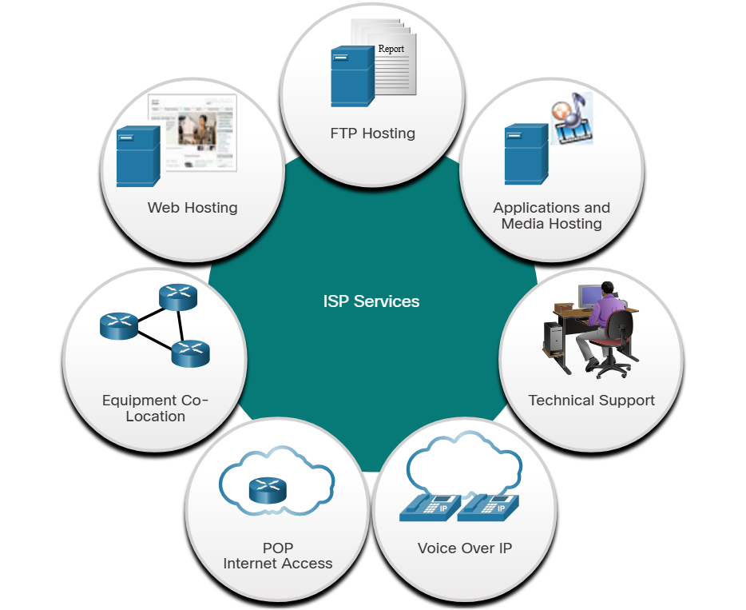
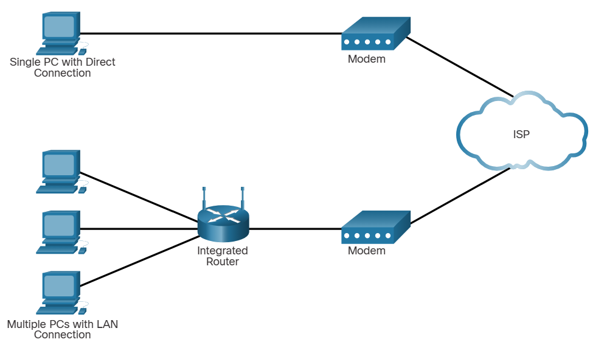
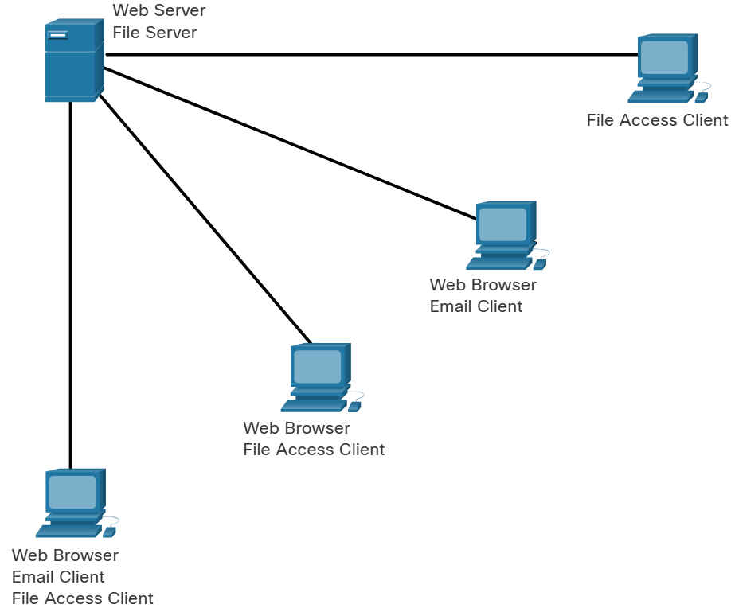

2.3 – ISP Connectivity Options
2.3.1 - ISP Services
-
An Internet service Provider (ISP) provides a link between the home network and the Internet.
- An ISP can be the local cable provider, a landline telephone service provider, the cellular network to
provide you smartphone services, or an independent provider who leases bandwidth on a physical network
infrastructure of another company.
- Many ISPs also offer additional services to their contract subscribers.
- These services can include email accounts, network storage and website hosting, and
- ISPs are connected in a hierarchical manner that ensures that Internet traffic generally takes the shortest
path from the source to the destination.
- ISPs are critical to communications across the global Internet.
- The Internet backbone is like an information superhighway that provides high speed data links to connect the
various service provider networks in major metropolitan areas around the world.
- The primary medium that connects the Internet backbone is fiber optic cable. This cable is typically
installed underground to connect cities within continents.
- Fiber optic cables also run under the sea to connect continents, countries and cities.

2.3.2 - ISP Connections
- The interconnection of ISPs that forms the backbone of the Internet is a complex web of fiber optic cables
with expensive networking switches and routers that direct the flow of information between source and
destination hosts.
- Average home users are not aware of the infrastructure outside of their network.
- For a home user, connecting to the ISP is a fairly uncomplicated process.
- The simplest ISP connection consists of a modem that provides a direct connection between a computer and the
ISP.
- A router is required to securely connect a computer to an ISP.
- The most common connection option consists of using a wireless integrated router to connect to the ISP. The
router includes a switch to connect wired hosts and a Wireless AP to connect wireless hosts.
- The router also provides client IP addressing information and security for inside hosts.

2.3.3 Cable and DSL Connections
- Most home users. Do not connect to their service providers with fiber optic cables.
- One of the most common methods is cable.
- Cable Typically offered by cable television service providers, the Internet data signal is carried on
the same coaxial cable that delivers cable television.
- It provides a high bandwidth always on connection to the Internet.
- A special cable modem separates the Internet data signal from the other signals carried on the cable and
provides Ethernet connection to a host computer or LAN.
- Another common method is DSL (Digital Subscriber Line).
- The digital subscriber line provides a high bandwidth or a zone connection to the Internet.
- It requires a special high speed modem that separates the DSL signal from the telephone signal and
provides it Ethernet connection to a host computer or LAN.
- DSL runs over a telephone line, with the line split into three channels.
- One channel is used for voice telephone calls. This channel allows an individual to receive phone
calls without disconnecting from the Internet.
- >A second channel is a faster download channel used to receive information from the Internet.
- A third channel is used for sending or uploading information. This channel is usually slightly
slower than the download channel.
- The quality and speed of the DSR connection depends mainly on the quality of the phone line and the
distance from the central office of your phone company. The farther you are from the central office, the
slower the connection.
>
2.3.4 Additional Connectivity Options
- Cellular
- Cellular Internet access uses a cell phone network to connect.
- Wherever you can get a cellular signal, you can get cellular Internet access.
- Performance will be limited by the capabilities of the phone and the cell tower to which it is
connected.
- The availability of cellular Internet access is a real benefit for people in areas that would otherwise
have no Internet connectivity at all, or for people who are constantly on the move.
- The downside of cellular connectivity is that the carrierI. usually meters the bandwidth usage of the
connection and may charge extra bandwidth that exceeds the contract data plan.
- Satellite.
- Satellite service is a good option for homes or offices that do not have access to DSL or cable
satellite dishes.
- Satellite dishes require clear line of sight to the satellite and so might be difficult in heavily
wooded areas or places with other overhead obstructions.
- Speeds will vary depending on the contract, though they are generally good.
- Equipment and installation costs can be high with. Moderate monthly fee thereafter.
- Like cellular accessed, the availability of satellite Internet access is a real benefit in areas that
would otherwise have no Internet connectivity at all.
- In metropolitan areas, many apartments and small offices are being connected directly with fiber optic
cables. This enables an Internet service provider to provide higher bandwidth speeds and support more
services such as Internet phone and TV.
- Dial up telephone.
- An inexpensive option that uses any phone line and a modem.
- To connect to the ISP, your user calls the ISP access phone number.
- The low bandwidth provided by a dial-up modem connection is usually not sufficient for large data
transfer, although it's useful for mobile access while traveling.
- A modern dial-up connection should only be conceded when higher speed connection options are not
available.
2.1.4 Peer-to-peer applications.
- A P2P application allows a device to act as both a client and a server within the same communication.
- In this model, every client is the server and every server is a client.
- P2P applications require that each end device provider user interface and run a background service.
- Applications use a hybrid system where resource sharing is decentralized, but the indexes that point to
resource locations are stored in a centralized directory.
- In a hybrid system, each peer accesses an index server to get the location of a resource stored on another
peer.
2.1.5 Multiple roles in the network.

Alexa put a 15 minute timer on. 15 minutes, starting now.